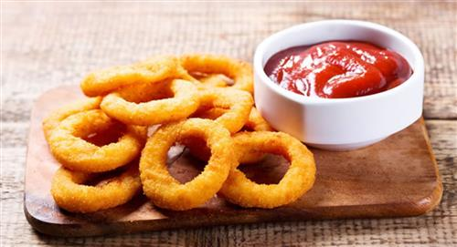
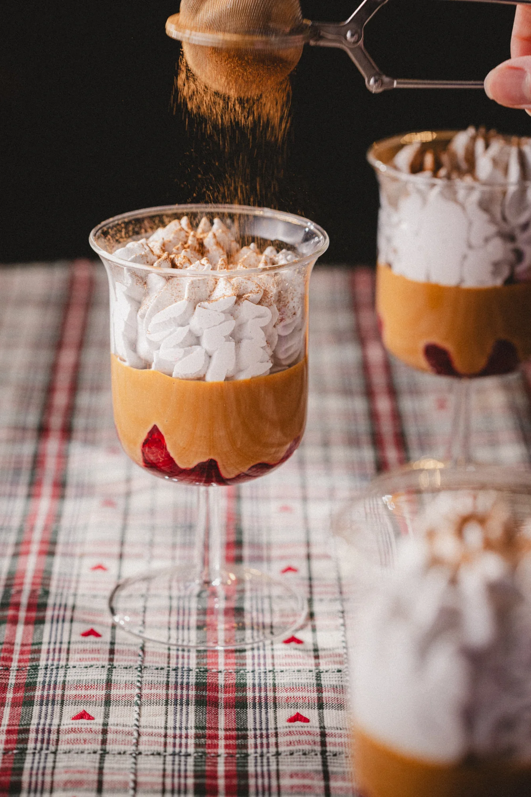

Aros de Cebolla
Aros de cebolla fritos preparados con ajo y especias. La salsa recomendada es la salsa de tomate con ajo.
₡3.500
Descubra nuestros platos favoritos.

Aros de cebolla fritos preparados con ajo y especias. La salsa recomendada es la salsa de tomate con ajo.
₡3.500

Pizza napolitana con salsa de tomate, mozzarella, albahaca y aceite de oliva. Preparada en horno de leña de forma tradicional. Masa preparada a mano con fermentación lenta y horneada a alta temperatura para obtener una textura crujiente y un sabor auténtico napolitano.
₡8.000

Postre tradicional costarricense preparado con lima, azúcar y leche condensada. Tiene una textura suave y cremosa, con un sabor dulce y ligeramente ácido. Ademas es servido con una capa de merengue y espolvoreado con canela en polvo, y unas rodajas de fresa fresca al fondo para darle un toque de frescura y color.
₡3.000